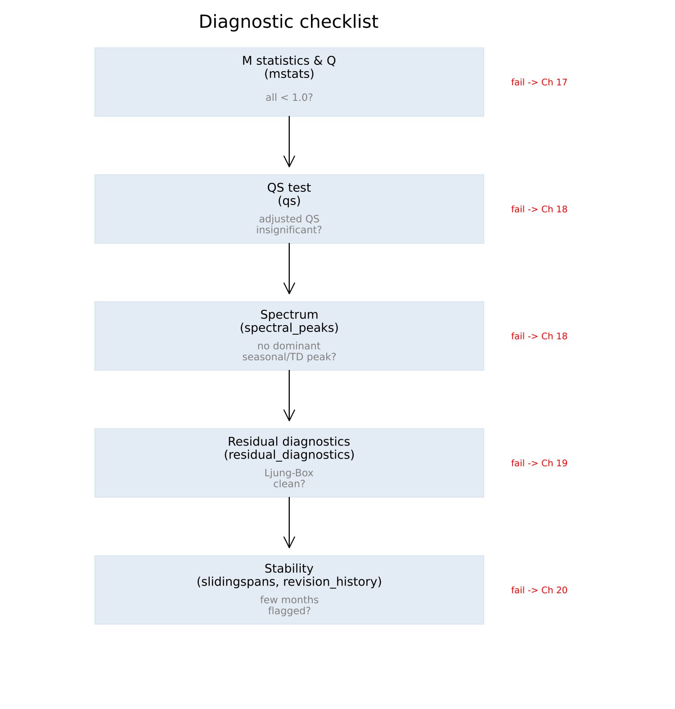

A. A Diagnostic Checklist
No prose. Chapter 16's taxonomy in operational form — what to check, which function, what value to want, what to do when it fails.

| Check | Function | Want | If it fails |
|---|---|---|---|
| M statistics | mstats | all eleven below 1.0 | Chapter 17 — identify which family (level, trend, seasonal) is implicated |
| Q / Q2 | mstats | below 1.0 | Chapter 17 |
| QS (original) | qs | significant | confirms seasonality was present to remove |
| QS (adjusted) | qs | insignificant | Chapter 18 — but check the spectrum too before concluding the adjustment failed |
| Spectral peaks | spectral_peaks, spectrum_peaks | no dominant seasonal or trading-day peak | Chapter 18 — look for a missing calendar regressor |
| Stable/moving seasonality F-tests | seasonality_tests | identifiable seasonality confirmed | Chapter 18 |
| Ljung-Box | residual_diagnostics | no significant lags | Chapter 19 — usually a missing regressor, not a wrong ARIMA order |
| Residual skewness/kurtosis/DW | residual_diagnostics | close to 0 / 3 / 2 | Chapter 19 |
| Sliding spans | slidingspans | low percentage of months flagged | Chapter 20 — consider a longer seasonal filter or a frozen spec |
| Revision history | revision_history | small average absolute revision | Chapter 20 |
None of these is a certificate on its own — Chapter 16's whole argument is that the battery exists because no single test, and no single pass, can be. Read several together, and expect them to occasionally disagree.
See also: Chapter 16 for why this checklist has this many rows.